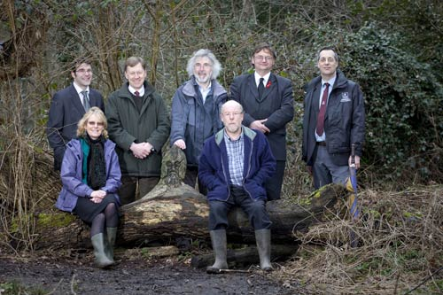
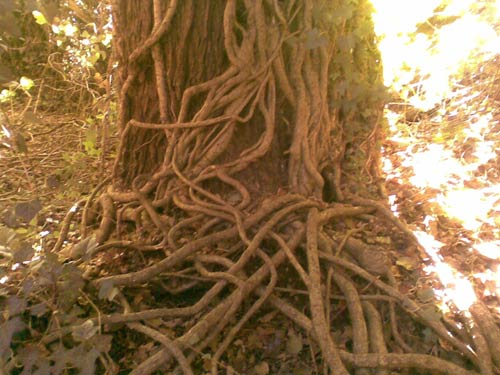
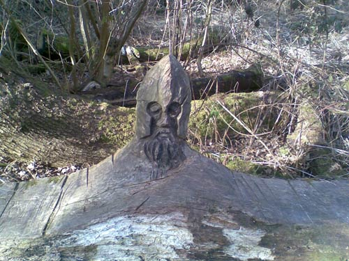
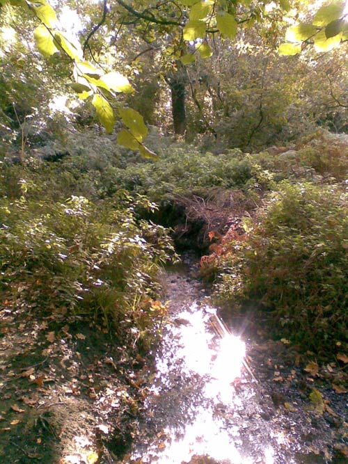

|
© 2021 Festival Art and Books. All rights reserved. Moseley BogSarah-Jane Lynch
A Birmingham nature reserve, which inspired the Old Forest in ‘Lord of the Rings’ and ‘The Hobbit’ has been awarded a whooping £376,500 grant from the Heritage Lottery fund. This money will aid a restoration project for the site. The project at ‘Moseley Bog and Joy’s Wood Nature Reserve’ will be carried out by ‘The Wildlife Trust for Birmingham and the Black Country’. They hope to restore the green space, within the city so it will have exceptional significance in terms of heritage, and be a welcome break from the hustle and bustle of city life. They will improve access to the site so people of all ages and abilities are able to visit. J.R.R. Tolkien lived in Moseley, Birmingham on Wake Green Road which is adjacent to the site. The ‘Bog’ was his childhood playground, and it was amongst these trees and woodlands, that his imagination was fired and he began to construct images of a magical world full of weird and wonderful characters. Each May a Tolkien weekend is held, which attracts thousands of fans to the ‘Bog’ and nearby ‘Sarehole Mill’, a site which was another great inspiration to his work. Tolkien fanatics can take a leisurely stroll, enjoying the beautiful landscape just as their favourite writer often did. The funding will drive new initiatives to encourage more visitors to the site; these include proposals for a new open air performance and education space designed to create a hub of activity for community events and courses. Improvements will also be made to boardwalks, steps, pathways and signposting around the site. Learning materials will be produced so the site can be used as an educational facility. These will include a website, an outreach programme for schools and community groups and a self guided mp3 tour. There will be opportunities for volunteers to become involved in the project, along with members of the Moseley Bog conservation group. It wasn’t an easy task to get to the point where they now are. At one stage after many years of underinvestment the ‘Bog’ was destined to become a landfill site, but too many people cared about protecting the site and thankfully it was saved. In the 1980’s a tireless ‘Save our Bog’ campaign was underway. It was urban conservation campaigner Joy Fifer who led the campaign, and thanks to her efforts, the ‘Bog’ was named as a ‘Site of Importance for Nature Conservation’. In 2000 the site was renamed in her honour. The ‘Bog’ comprises of a number of diverse habitats, including the bog itself and a variety of dry woodlands. It also home to a number of species including birds, invertebrates and small mammals. Two Bronze Age burnt mounds with Scheduled Ancient Monument status, a former mill pool dam, a pond and a former water mill give the site important cultural and archaeological significance.Neil Wyatt, Chief Executive of The Wildlife Trust for Birmingham and the Black Country, said: “On the day our application for funding went to the HLF I was here, and saw two buzzards circling low overhead – here in the heart of the city. This is a remarkable reserve on its own merit, yet this place means so much to so many people, in so many different ways. It inspired Tolkien, and it has inspired local people to stand up for their local green spaces across the country. Now, finally, all the effort of the local community to protect and look afterMoseley Bog and Joy’s Wood will be rewarded. This is one of the UK’s most important urban nature reserves, and we are so grateful for the support it is to receive.” Katie Foster, Chair of the Head of the Heritage Lottery Fund West Midlands committee said: Finally Bob Blackham, leader of the volunteers of Moseley Bog, and a man with wide knowledge of all things Tolkien said: This lottery money can help to make a real difference at the ‘Bog’ and once complete will stand as fantastic tribute to Tolkien and the open space will be a real asset to the area. For more information on the funding visit www.wild-net.org
    |